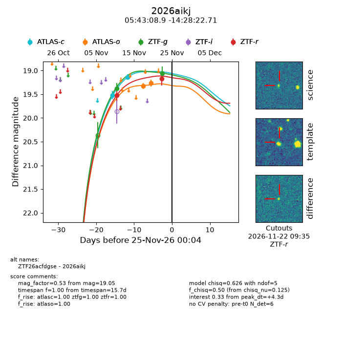
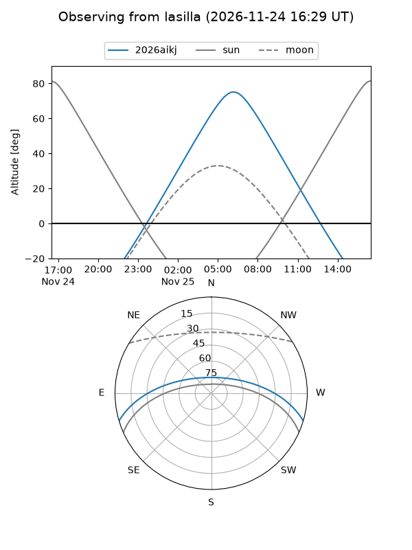
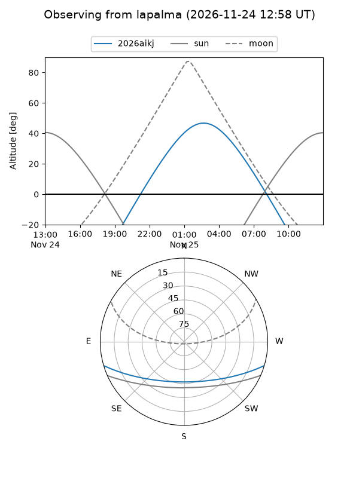
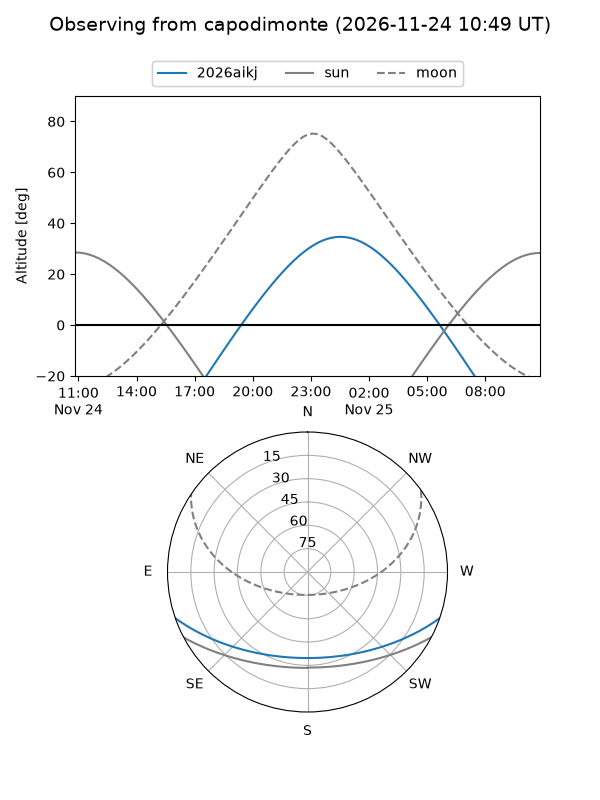
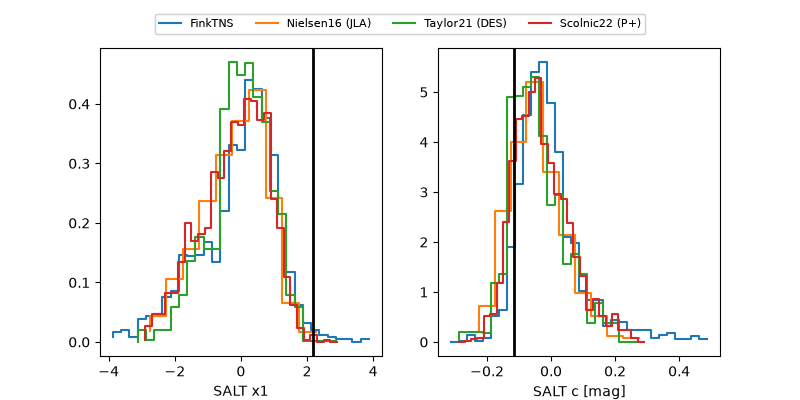

2026aikj
Target 2026aikj at 2026-11-25 12:06
Aliases and brokers:
FINK-ZTF: ztf.fink-portal.org/ZTF26acfdgse
Lasair-ZTF: lasair-ztf.lsst.ac.uk/objects/ZTF26acfdgse
ALeRCE-ZTF: alerce.online/object/ZTF26acfdgse
YSE-PZ: ziggy.ucolick.org/yse/transient_detail/2026aikj
TNS name: wis-tns.org/object/2026aikj
Direct TNS query: direct search
alt names
ZTF26acfdgse (ztf,fink_ztf)
2026aikj (tns,yse)
Coordinates:
equatorial (ra, dec) = 85.7871,-14.47298
equatorial (HMS+DMS) = 05:43:08.91,-14:28:22.71
galactic (l, b) = (218.6578,-21.52771)
Flags:
peak dt: +4.8
Photometry:
last atlasc=19.14, atlaso=19.27, ztfg=19.05, ztfr=19.17
2 atlasc, 2 atlaso, 2 ztfg, 2 ztfr detections
Lightcurve

Visibility



Additional plots
